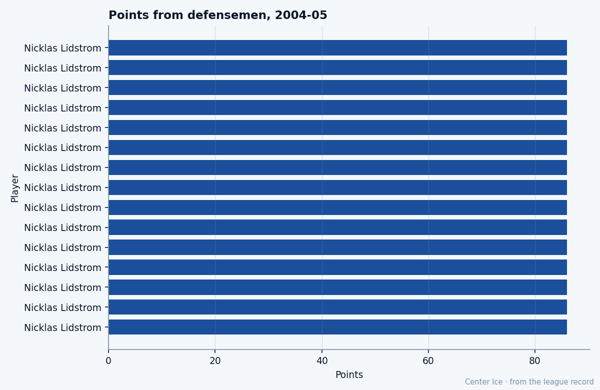

Sergei Fedorov, at 35: 71 goals, 23.1 minutes a night, and the 74th pick who never found a ceiling
The Pearson Award winner scored 111 points this season and 18 more in 17 playoff games before Dallas ended it. The Book says 90. The Index says minus 1. Neither number explains a 35-year-old third-rounder from Pskov who is still the best player on his club.
 Tomáš VránaProfile writer · The Sweater
Tomáš VránaProfile writer · The Sweater Sergei Fedorov86 scored 71 goals and 111 points in 82 games at 23.1 minutes a night this season. He won the Lester B. Pearson Award. He carried
Sergei Fedorov86 scored 71 goals and 111 points in 82 games at 23.1 minutes a night this season. He won the Lester B. Pearson Award. He carried  Mighty Ducks of Anaheim to the Western Conference Final and scored 12 goals and 18 points in 17 playoff games before
Mighty Ducks of Anaheim to the Western Conference Final and scored 12 goals and 18 points in 17 playoff games before  Dallas Stars ended it in 5. He is 35. He was drafted 74th overall in the third round in 1989.
Dallas Stars ended it in 5. He is 35. He was drafted 74th overall in the third round in 1989.
The [[Bureau]]'s Book has him at 90. The Development Index has him at minus 1, which means the current overall sits one grade below his base. At 35, in a playoff series, he is still the best player on the ice in most shifts and still the man the opposing center is assigned to.
What the record carries
The sheet gives his origin in two lines: born in Pskov, Russia, drafted in 1989, 74th overall, third round. What he built between that pick and those 71 goals is not on the sheet.
He sits 17th in this season's scoring table on 111 points. Brett Hull sits 16th, also on 111 points, at 40 years old. Fedorov's 71 goals is the highest goal total among men 33 and older this season:  Jaromir Jagr84 has 69 at 33, Hull has 56 at 40.
Jaromir Jagr84 has 69 at 33, Hull has 56 at 40.
| season | GP | G | A | P | MPG | overall |
|---|---|---|---|---|---|---|
| 2004-05 regular | 82 | 71 | 40 | 111 | 23.1 | 90 |
| 2004-05 playoff | 17 | 12 | 6 | 18 | 23.1 | 90 |
The regular-season and playoff lines read the same way: the goal total is enormous, the assist total is modest, the minutes are enormous, and the grades barely shift.
The run that ended in 5
Mighty Ducks of Anaheim came in as the 6th seed in the West. They beat  Nashville Predators in 6, beat
Nashville Predators in 6, beat  Edmonton Oilers in 6, and lost to Dallas Stars in 5. The Dallas series was never close: DAL won the first three games by 3, 1, and 4 goals. Game 4 went to overtime and Mighty Ducks of Anaheim won 3-2. Game 5 went to overtime and Dallas won 2-1.
Edmonton Oilers in 6, and lost to Dallas Stars in 5. The Dallas series was never close: DAL won the first three games by 3, 1, and 4 goals. Game 4 went to overtime and Mighty Ducks of Anaheim won 3-2. Game 5 went to overtime and Dallas won 2-1.
Fedorov scored 12 goals in 17 games. That is the highest single-player goal total among the scorers listed across all six clubs still playing this spring. The room around him produced [[Vaclav Prospal]] with 14 points and [[Aki Berg]] with 10. The grades on those men tell you what Fedorov is doing to keep this club alive.

What the Book cannot hold
The overall of 90 at 35 is the number that stops the eye on his page. The [[Bureau]]'s Book is a measure of what a man is right now, not what he was. A 90 at 35 means the evaluators think he is still a 90 player. A minus 1 at 35 with 111 points on the season is the Bureau saying: the best version of him is 91 and today he is 90. That is a rounding error on a man whose season just ended in a conference final.
The 74th pick stands out in retrospect. Seventy-four men went before him in 1989. Most of them never played a NHL game. He has been in this league long enough to win a Hart, a Pearson, and a Richard, and he scored 71 goals this season at an age when most of the men drafted before him are retired or collecting a pension.
What the room says
Fedorov has 40 assists in 82 games, which is a low number for a man his overall is supposed to be, and 71 goals, which is the kind of number that gets you into the Hart conversation except at 35 nobody asks you those questions anymore. He played 23.1 minutes a night in the regular season. That is top-pairing center ice from a man the league considers a goaltender's nightmare, not a young center's development problem.
In the playoffs, he had 12 goals and 6 assists in 17 games across three rounds. The 6 assists in 17 playoff games is the only number on his page that makes sense with the 40 in 82: the playoffs slow the passing lanes, force him into his own hands, and at 35 the legs give you the first step but not the second one, so the goal total stays high and the secondary helpers thin out.
Mighty Ducks of Anaheim is eliminated. The 2005-06 season is 139 days away. The record lists him with the club as of today, which means he is an Anaheim Duck. Whether that holds past July 28, when free agency closes, the record does not say.
What the record does say: 35 years old, 74th overall in the third round, 71 goals, 111 points, Pearson Award, 12 goals in 17 playoff games, minus 1 on the Index, 90 in the Book. The digits do not say what the rest of him pays for 71 goals at 35.